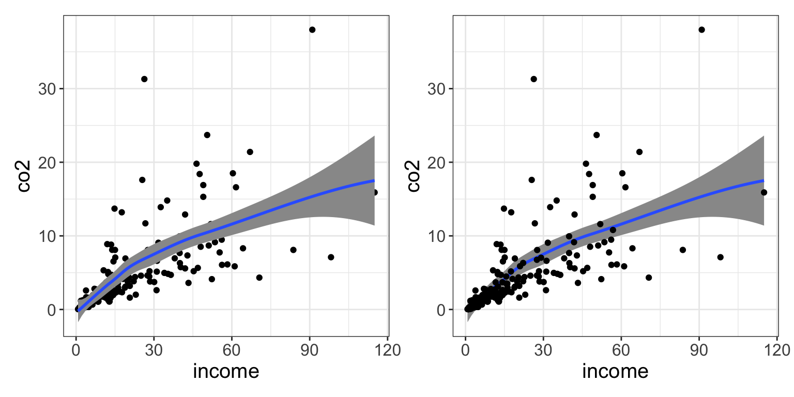
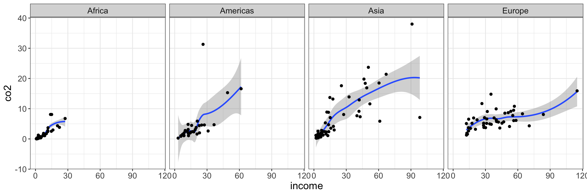

In this chapter, you will be learn about how to use functionality from the {ggplot2} package to visualize your data. Data visualization helps you identify trends in your data. It can also help you find unexpected observations or patterns you might miss in the raw numbers themselves. Visualization is an important step in almost every data analysis and is often all you need to draw meaningful conclusions about the data!
We will use the gapminder.csv data to illustrate how to create and modify visualizations using functionality in {ggplot2}.
To begin, we will load the {dplyr}, {ggplot2} and {readr} libraries, and import the data into an object called gapminder.
# Load librarieslibrary(dplyr)library(ggplot2)library(readr)# Read in datagapminder =read_csv(file ="https://raw.githubusercontent.com/zief0002/modeling/main/data/gapminder.csv")# View dataglimpse(gapminder)
The gg in {ggplot2} stands for grammar of graphics. The grammar of graphics (Wilkinson, 2005) is a formal system of expressive grammatical rules for creating perceivable graphs. The grammar of graphics includes things such as aesthetics, geometries, scales, facets, and guides. Hadley Wickham adopted this grammar into the initial {ggplot} package, which he then re-wrote and updated to create the {ggplot2} package. As you learn how to create plots using {ggplot2}, you will also begin to learn the grammar of graphics. Understanding this grammar will help you describe, and create almost any visualization you can imagine.
5.2 Understanding the Basic Syntax
Plots in {ggplot2} are built by layering different components. For example, consider the following syntax which creates a scatterplot using the income and CO2 emissions attributes:
Figure 5.1: Scatterplot of CO2 emissions versus income.
In this syntax there are three layers used to create the plot:
a global layer,
a geometric layer, and
a theme layer.
The layers are literally summed together to form the plot. We will look at each of these layers in turn.
5.2.1 The Global Layer
The first layer (referred to as the global layer) in every plot you create employs the function ggplot(). It contains a reference to the source data (data=) and any global aesthetic mappings (more about this later). The first layer only sets up the plot, it doesn’t actually plot anything.
ggplot(data = gapminder, aes(x = income, y = co2))
Figure 5.2: The background layer for the plot is drawn. The domain (x-values) and range (y-values) is based on data in the income and co2 attributes.
The data= argument indicates the source data frame.
The aes= argument sets the aesthetic mapping(s).
5.2.2 Aesthetics and Aesthetic Mappings
Aesthetics define what we, as humans, perceive in a given plot; that is the visual properties of a plot. For example, the position of certain elements in the plot (where they are located), or the color or transparency of an element. These aesthetics can be fixed or variable. For example, consider the color of a set of points. If the color is fixed, it would be the same for all the points. If the color is variable, it might be red for some points and blue for other points. Often, this variability in the aesthetic is based on some attribute in our dataset (e.g., points representing Democrats are colored blue, while those representing Republicans are colored red).
Linking an aesthetic to an attribute in the data, is referred to as an aesthetic mapping. That is because aesthetic mappings map visual properties in the plot (e.g., position, color) to the values in a particular attributes in the data. Aesthetic mappings are specified in an aes() function. In our earlier example syntax, there were two aesthetic mappings that were defined:
Income values from the data will be mapped to the x-position.
CO2 values from the data will be mapped to the y-position.
These mappings were used to define the domain (x-values) and range (y-values) for the blank plot created by the ggplot() global layer.
IMPORTANT
All aesthetic mappings need to be specified in an aes() function. Because aesthetic mappings use information in the attribute to apply the specified visual properties, the aesthetics (e.g., x=, y=, color=) need to be set to an attribute name in the data frame. For example, both income and co2 are attribute names in the gapminder data object.
5.2.3 Adding Layers
After starting with the global layer, we can modify our visualization by adding layers to the global layer. For example, the layer that includes the function geom_point() is being added to the global layer in the syntax below.
ggplot(data = gapminder, aes(x = income, y = co2)) +geom_point()
Figure 5.3: Points are added on top of the plot’s background layer.
Geometric layers (geom_*) are used to add things like points, lines, histograms, densities, etc. The geom_point() layer in our plot is actually drawing the points of the scatter plot. These layers draw on the aesthetic mappings defined in the global layer to know where to draw these geometric objects. For example, the data in the income and co2 variables define the x- and y-positions of the points, respectively.
When layers are added they are “stacked” on top of previous layers. For example, consider the two sets of syntax below. Each will again create our scatterplot by adding a set of points based on the data in the global layer. Each will also draw a loess smoother (a sort of trend line). However, in the first set of syntax, the smoother is drawn on top of the points, and in the second set of syntax, the points are drawn on top of the loess smoother. (The argument alpha=1 sets the transparency of the smoother to be completely opaque.)
# LEFT: Draw smoother on top of pointsggplot(data = gapminder, aes(x = income, y = co2)) +geom_point() +geom_smooth(alpha =1)
# RIGHT: Draw points on top of smootherggplot(data = gapminder, aes(x = income, y = co2)) +geom_smooth(alpha =1) +geom_point()
Figure 5.4: LEFT: The smoother is drawn on top of the points. RIGHT: The points are drawn on top of the smoother.

A useful metaphor might be to imagine putting together a collage of many different photographs. Some parts of some of the photographs (especially those you put down first) might be covered up by photographs that you add later.
PROTIP
When you are creating plots, you might need to switch the order of some of the layers to get the visualization you want.
5.2.4 Good Syntactic Habits
As we add multiple layers to build up our plot, it is a good habit to use multiple lines for the syntax. Generally we put one layer on each line.
The + sign needs to be at the end of the line (not at the beginning). If you are using a script file (which you should be), highlight ALL layers in the plot and click Run to create the plot.
PROTIP
If you write your {ggplot2} syntax across multiple lines, it makes it not only easier to read, but also easier to try out different layers or features. For example, you can comment out lines to remove layers as you are building the plot without losing the syntax you wrote.
You can also debug syntax by highlighting all lines up to a given + sign and running the syntax. By subsequently highlighting and running additional lines of syntax, you can often figure out where any errors show up!
5.3 Global vs. Local Aesthetic Mappings
As you learned earlier, we use the aes() function to set aesthetic mappings (i.e., linking attributes to aesthetics). Aesthetic mappings are often set globally (in the initial ggplot() layer). When we include aesthetic mappings in the global layer they are applied to all layers in the plot. For example, the syntax below maps data in the income attribute to the x-position, data from the co2 attribute to the y-position, and data from the region attribute to color for both the loess smoother and the points.
# All aesthetic mappings are globalggplot(data = gapminder, aes(x = income, y = co2, color = region)) +geom_smooth() +geom_point()
Figure 5.5: The global aesthetic mappings of x- and y-positioning, as well as, color are applied to the smoother and point layers.
FYI
Notice when we use non-positional aesthetic mappings (e.g., color) a legend, or guide in the grammar of graphics, will be automatically added to our plot for each aesthetic mapping.
Aesthetic mappings can also be set locally in a specific layer. Aesthetic mappings set in a specific layer only apply to that particular layer. Below, we continue to globally map data from the income attribute to the x-position, and data from the co2 attribute to the y-position. Both the smoother layer and point layer will utilize that. However, only the point layer will map data from the region attribute to color. Note that regardless of whether the aesthetic mapping is global or local, we still make this mapping inside an aes() function.
# Aesthetic mappings for x- and y-position are global# Aesthetic mapping for color only applies to the points layerggplot(data = gapminder, aes(x = income, y = co2)) +geom_smooth() +geom_point(aes(color = region))
Figure 5.6: The global aesthetic mappings of x- and y-positioning are applied to the smoother and point layers. The aesthetic mapping of color is only applied to the point layer.
5.4 Fixed Aesthetics
Fixed aesthetics assign the exact same value for the visual property for all the observations; it is not based on the data. Fixed aesthetics do not go inside of the aes() function. (Remember: Inside of the aes() function the mapping has to be to an attribute name!) The following syntax uses the following aesthetics:
Global aesthetic mapping: Data from the income attribute mapped to the x-position.
Global aesthetic mapping: Data from the co2 attribute mapped to the y-position.
Fixed local aesthetic: All points are given a shape of 22 (filled square with a border). You can see all the shape options here.
Fixed local aesthetic: All points are given a size of 4 (slightly bigger). The default size is 3.
Local aesthetic mapping: Data from the region attribute mapped to fill for the points layer only. Because we are using a different shape we use fill= rather than color= to color the observations.
Fixed local aesthetic: All points are given a border color of black (for this shape border color is set using color=).
# Aesthetic mappings for x- and y-position are global# Aesthetic mapping for fill only applies to the points layer# All points are the same shape, size, and border colorggplot(data = gapminder, aes(x = income, y = co2)) +geom_smooth() +geom_point(aes(fill = region), shape =22, size =4, color ="black")
Figure 5.7: The global aesthetic mappings of x- and y-positioning are applied to the smoother and point layers. The aesthetic mapping of color is only applied to the point layer. The point layer also includes several fixed aesthetics.
5.5 Faceting: Separate Plots for Subgroups
Faceting creates a separate plot for different levels of a attribute. This is useful, for example, when you want a separate plot for different subgroups. To facet on a single attribute include the facet_wrap() layer. The wiggle, or tilde, (~) sets the attribute to facet on. In the following syntax, we create a separate plot for each region.
Scatterplot of per person CO2 emissions versus income for 193 countries. This plot is shown for each of the four world regions.
We can format the output of the facetted plots by setting the number of rows (nrow=) or columns (ncol=). For example, the following syntax outputs all four subplots in a single row.
Figure 5.8: Scatterplot of per person CO2 emissions versus income for 193 countries. This plot is shown for each of the four world regions.

5.5.1 Facetting on Multiple Variables
To facet on multiple attributes, use facet_grid() rather than facet_wrap(). The facet_grid() layer also uses the wiggle or tilde, but in this function we will include an attribute before the tilde and a second attribute after the tilde. This defines the layout of the plot grid, so that the attribute that comes prior to the tilde will be facetted into separate rows, and the attribute that comes after the tilde will be facetted into different columns (i.e., rows ~ columns). The syntax below facets on both world region (rows) and CO2 change (columns).
# Facet: regions in rows; ggplot(data = gapminder, aes(x = income, y = co2)) +geom_smooth() +geom_point() +facet_grid(region ~ co2_change)
Figure 5.9: Scatterplot of per person CO2 emissions versus income for 193 countries. This plot is shown for each of the four world regions and whether or not CO2 emissions increased or decreased since 2007.
5.6 Working with the Axes
Many of the functions and layers employed in {ggplot2} syntax is to fine-tune the plot and make it ready for publication. One place this happens is on the axes of the plot. Changing the labels, the limits, or even where breakpoints occur are all things you may want to adjust as you ready a plot for publication.
5.6.1 Changing the Axis Label
Two commonly used layers are xlab() and ylab(). These layers are used to change the label on the x- and y-axes, respectively. Here we change the axis label on both the x- and y-axes to give more information about the attributes being plotted.
# Change the labels on the x- and y-axisggplot(data = gapminder, aes(x = income, y = co2)) +geom_smooth() +geom_point() +xlab("Per-person income (in thousands of international dollars, fixed for 2017 prices)") +ylab("Per-person CO2 emissions (in metric tonnes)")
Figure 5.10: Using xlab() and ylab() to change the labels on the axes.
5.6.2 Changing the Axis Limits
Another set of commonly used layers are xlim() and ylim(). These layers are used to set the limits on the x-axis and y-axis, respectively. These functions take two values which set the limits on the particular axis. The first value provided is the minimum, and the second value given is the maximum. Here, for example, the x-limits in the plot will be 0 to 125, and the y-axis will be 0 to 50.
# Change the limits on the x- and y-axisggplot(data = gapminder, aes(x = income, y = co2)) +geom_smooth() +geom_point() +xlab("Per-person income (in thousands of international dollars, fixed for 2017 prices)") +ylab("Per-person CO2 emissions (in metric tonnes)") +xlim(0, 125) +ylim(0, 50)
Figure 5.11: Using xlim() and ylim() to change the limits on the axes.
5.6.3 Fine-Tuning Axis Scales
The xlab(), ylab(), xlim() and ylim() functions we used are shortcuts to using scaling layers. The use of scaling layers allows much more fine-tuning and control of the axis scales. There are four different scaling functions you can use depending on which axis (x or y) you want to control and whether the variable plotted along that axis is continuous or discrete. The four functions are:
scale_x_continuous(),
scale_x_discrete(),
scale_y_continuous(), and
scale_y_discrete().
For example, in our plot, to fine-tune the x-axis we could use scale_x_continuous() since income is a continuous variable and we want to fine-tune the x-axis.
# Fine-tune the x-axisggplot(data = gapminder, aes(x = income, y = co2)) +geom_smooth() +geom_point() +scale_x_continuous(name ="Per-person income (in thousands of international dollars, fixed for 2017 prices)",limits =c(0, 125),breaks =c(0, 10, 20, 30, 40, 50, 60, 70, 80, 90, 100, 110, 120) ) +ylab("Per-person CO2 emissions (in metric tonnes)") +ylim(0, 50)
Figure 5.12: Scale on the x-axis set to have a label, as well as, specific limits, and break lines.
The name= option labels the scale—it replaces xlab(). The limits= argument takes a vector of the minimum and maximum values—it replaces xlim(). The breaks= option adds break lines on the axis. There are several other options including labels= for labeling the break lines, etc.
5.6.4 Customizing the Color and Fill
Scaling functions can also be used to fine-tune colors and fills. For these you need to specify the aesthetic, either color or fill, and also the palette you want to use. For example, scale_fill_manual() can be used to manually set the colors when the fill= aesthetic mapping is used, whereas scale_color_manual() can be used to manually set the colors when the color= aesthetic mapping is used.
In an earlier example, we used the fill= mapping to fill the points using the region attribute. Because of this we will use the layer scale_fill_manual() to change the fill colors. We use the values= argument to set the colors. Since the region attribute includes four values, we need to give the values= argument a vector of four different colors.
# Specify fill colors using color namesggplot(data = gapminder, aes(x = income, y = co2)) +geom_smooth() +geom_point(shape =21, aes(fill = region)) +scale_fill_manual(values =c("skyblue", "plum", "orange", "chartreuse"))
Figure 5.13: Color palette set manually using named color values.
Here, the alphabetic order of the values in the region variable correspond to the order of colors given in the values= argument of scale_color_manual(). In our examples:
Africa –> “skyblue”
Americas –> “plum”
Asia –> “orange”
Europe –> “chartreuse”
Instead of relying on alphabetical order, we can also assign a specific color to a specific region by using named arguments in the scale_fill_manual() layer. Here the names need to correspond to the different regions in the region variable.
# Specify fill colors using color names and assign them to regionsggplot(data = gapminder, aes(x = income, y = co2)) +geom_smooth() +geom_point(shape =21, aes(fill = region)) +scale_fill_manual(values =c("Africa"="chartreuse", "Americas"="orange", "Asia"="plum", "Europe"="skyblue" ) )
Figure 5.14: Color palette set manually using named color values. Colors are assigned to specific regions by naming them in the scale_fill_manula() layer.
The color names used are built-in color names that R knows. There are 657 different named colors that you can use. To see them all, use the colors() function (with no arguments).
5.6.4.1 Specifying Colors: RGB Color Model
Colors can also be defined using an RGB color model. This model uses a triplet of values to indicate the intensity of red (R), green (G), and blue (B) hues in the color. Each value in the triplet takes a value from 0 (none of that hue) to 255 (complete hue). For example, the color “skyblue” is equivalent to the RGB value of (135, 206, 235), where the triplet values correspond to:
Red: 135
Green: 206
Blue: 235
Using the RGB color model, we can obtain 16,777,216 different colors! To specify a color using the RGB color model, we use the rgb() function. This function takes the arguments red=, green= and blue=. We also need to indicate the maximum color value1, in our case 255 using maxColorValue=. The syntax to re-create the colors from the previous plot using the RGB color model is shown below.
# Specify fill colors using RGB color modelggplot(data = gapminder, aes(x = income, y = co2)) +geom_smooth() +geom_point(shape =21, size =4, aes(fill = region)) +scale_fill_manual(values =c("Africa"=rgb(red =135, green =206, blue =235, maxColorValue =255), #skyblue"Americas"=rgb(red =221, green =160, blue =221, maxColorValue =255), #plum"Asia"=rgb(red =255, green =165, blue =0, maxColorValue =255), #orange"Europe"=rgb(red =127, green =255, blue =0, maxColorValue =255) #chartreuse ) )
Figure 5.15: Color palette set manually using RGB triplets.
5.6.4.2 Specifying Colors: HEX
Colors can also be defined using hexadecimal (hex) notation. This notation takes the three RGB color model values (from 0–255) and converts each of those to a two-digit base-16 value. For example “skyblue”, which in the RGB color model was (135, 206, 235) in hex is:
Red: 135 (RGB) –> 87 (hex)
Green: 206 (RGB) –> CE (hex)
Blue: 235 (RGB) –> EB (hex)
There are many websites that will convert between RGB values and hex, including Google. (Just type the following search string into Google: “convert 135, 206, 235 to hex”.) The hex notation for color is the six-digit value of the three concatenated two-digit color values. So skyblue is denoted:
Skyblue: #87CEEB
When we specify hex notation as a color in R, the six-digit color value is always preceeded by a hashtag (#). This is given as a character string instead of a color name. So to specify the colors in our plot using hex notation, the syntax is as follows.
# Specify fill colors using hex notationggplot(data = gapminder, aes(x = income, y = co2)) +geom_smooth() +geom_point(shape =21, size =4, aes(fill = region)) +scale_fill_manual(values =c("Africa"="#87CEEB", "Americas"="#DDA0DD", "Asia"="#FFA500", "Europe"="#7FFF00" ) )
Figure 5.16: Color palette set manually using hex notation.
FYI
Using lower-case letters in the hex notation would also work. Just remember to always include a hashtag when specifying hex.
5.7 Selecting a Color Palette
Selecting a color palette can be challenging. It should be aesthetically pleasing, but needs to convey the differences and nuances in the data that you are using color to display. Here are a few resources for thinking about color palettes:
One good set of color palettes are the Brewer palettes. These palettes were chosen by Cynthia Brewer, a cartographer and artist, to be both colorblind friendly and aesthetically pleasing. Moreover, the palettes were designed to help humans make sense of the visualized data based on how we perceive the colors that are displayed. She has palettes for three different types of data
Qualitative/Categorical: Colors do not have a perceived order
Sequential: Colors have a perceived order and perceived difference between successive colors is uniform
Diverging: Two back-to-back sequential palettes starting from a common color (e.g., for Likert scale data)
You will also want to think about accessibility in your choice of color palette. Roughly 8% of males and 0.5% of females have some form of color vision deficiency which will affect how they see and interpret the plot. One good palette for colorblindness is the Okabe Ito palette.
Figure 5.17: Okabe Ito colorblind-friendly palette.
Also, the new Federal accessibility law requires certain levels of color contrast. Although this applies mainly to text color, thinking about color contrasts is good practice. You can check the contrast of two colors at https://contrast-ratio.org/.
5.7.2 Organizational Color Palettes
If you are creating visualizations for a particular organization, there may be a palette of official colors associated with their brand. For example, the University of Minnesota’s two official primary colors in hex notation (for electronic display) are:
There are several packages that include functions with built-in color palettes. Some of my favorite extension packages include:
{ggthemes} includes palettes used by FiveThirtyEight and Tableau [see here];
{wesanderson} includes palettes based on Wes Anderson movies [see here]; and
{nationalparkcolors} includes palettes based on National Park posters and images [see here; this needs to be installed from GitHub].
Emil Hvitfeldt has also put together a package called {paletteer}, that includes a comprehensive collection of color palettes in R that can be called using a common interface [see here].
5.8 Customizing the Legend/Guide
Scaling functions can also be used to change the name and labels in the legend or guide. When we used the color scales, the guide included both the name of the attribute being plotted, and each value of the attribute along with its corresponding fill color. To change the , We can include the argument name= to edit the text of the attribute name in the guide. We can also use labels= to edit the text for each of the attribute vaslues. For example, below we change the text of the attribute in the guide to read “World Region” and the text of “Americas” to instead read “The Americas”. Note that because there are four attribute values, the labels= argument needs to have a vector with four values; we can’t only include the text we want to change.
# Specify Brewer color palette (qualitative, Set 1)ggplot(data = gapminder, aes(x = income, y = co2)) +geom_smooth() +geom_point(shape =21, size =4, aes(fill = region)) +scale_fill_manual(name ="World Region",values =c("Africa"="#87CEEB", "Americas"="#DDA0DD", "Asia"="#FFA500", "Europe"="#7FFF00"),labels =c("Africa", "The Americas", "Asia", "Europe") )
Figure 5.18: Customizing the legend with the labels= argument in scale_color_manual().
5.9 Themes: Changing the Look of Your Plot
There are several “built-in” themes that you can use to change the look of your plot: theme_grey(), theme_minimal(), theme_linedraw(), theme_light(), theme_dark(), theme_minimal(), theme_classic(), theme_void(), and theme_test(). The default theme is theme_grey(). Here we use the layer theme_minimal() to modify the look of our plot. This theme uses a minimal black-and-white background (rather than grey).
# Using the `theme_minimal()` layer to update the look of the plotggplot(data = gapminder, aes(x = income, y = co2)) +geom_smooth() +geom_point(shape =21, size =4, aes(fill = region)) +scale_fill_manual(name ="World Region",values =c("Africa"="#87CEEB", "Americas"="#DDA0DD", "Asia"="#FFA500", "Europe"="#7FFF00"),labels =c("Africa", "The Americas", "Asia", "Europe") ) +theme_minimal()
Figure 5.19: Using the theme_minimal() layer to update the look of the plot.
5.9.1 The ggthemes Package
The {ggthemes} package includes 20 additional themes that you can use to style your plot (see here to view the different themes available). Here I use a theme similar to that from plots that appear in the Wall Street Journal.
# Load librarylibrary(ggthemes)# Using the `theme_wsj()` layer to update the look of the plotggplot(data = gapminder, aes(x = income, y = co2)) +geom_smooth() +geom_point(shape =21, size =4, aes(fill = region)) +scale_fill_manual(name ="World Region",values =c("#87CEEB", "#DDA0DD", "#FFA500", "#7FFF00"),labels =c("Africa", "The Americas", "Asia", "Europe") ) +theme_wsj()
Figure 5.20: Using the theme_wsj() layer from the {ggthemes} package to update the look of the plot to look like plots in the Wall Street Journal.
5.9.2 Customizing a Theme
The theme() layer can be used to change every element in the plot (e.g., grid lines, font, color, etc.). See here for more detail. In the syntax below, we call theme_minimal() to get the minimal black-and-white them from before, and the use arguments in the theme() layer to change the font face and color on the axes labels.
# Using the `theme_minimal()` layer to update the look of the plotggplot(data = gapminder, aes(x = income, y = co2)) +geom_smooth() +geom_point(shape =21, size =4, aes(fill = region)) +scale_fill_manual(name ="World Region",values =c("#87CEEB", "#DDA0DD", "#FFA500", "#7FFF00"),labels =c("Africa", "The Americas", "Asia", "Europe") ) +theme_minimal() +theme(axis.title.x =element_text(face ="bold", color ="blue"),text =element_text(size =20) )
Figure 5.21: You can customize almost any part of the theme using the theme() layer. In this plot we changed the font color on the x-axis label and increased the font size of all the text elements in the plot.
The theme() function can also be used to create your own {ggplot2} theme. This is useful if you always want your plots to look a certain way (e.g., to fit an organizations style guide) or are always using the same modifications to the theme in your plots. Below, I create a theme called theme_andy() that
# Create theme_andy()theme_andy =function() {theme_minimal() +theme(# add borderpanel.border =element_rect(colour ="#7a0019", fill =NA, linetype =1),# modify gridpanel.grid.major.x =element_line(color ="#7a0019", linetype =1, size =0.25),panel.grid.minor.x =element_line(color ="#ffb71e"),panel.grid.major.y =element_line(color ="#7a0019", linetype =1, size =0.25),panel.grid.minor.y =element_line(color ="#ffb71e"),# modify text, axis and coloraxis.text =element_text(colour ="#5b0013", face ="italic", family ="Times New Roman"),axis.title =element_text(colour ="#5b0013", family ="Times New Roman"),axis.ticks =element_line(colour ="#5b0013"),# legend at the bottomlegend.position ="bottom",text =element_text(size =20) )}# Use theme_andy() to theme the plotggplot(data = gapminder, aes(x = income, y = co2)) +geom_smooth() +geom_point(shape =21, size =4, aes(fill = region)) +scale_fill_manual(name ="World Region",values =c("#87CEEB", "#DDA0DD", "#FFA500", "#7FFF00"),labels =c("Africa", "The Americas", "Asia", "Europe") ) +theme_andy()
Figure 5.22: You can also create your own theme to use with any plot.
5.10{ggplot2} Extension Packages
There are several packages that extend the functionality of {ggplot2}. Many of these packages are listed at the ggplot2 Extensions page.
Figure 5.23: Extensions are available at the ggplot2 extensions website.
One useful extension package is the {scales} package. The functions and layers in this package are useful for transforming and labeling scales that are used to create your plot. For example, one of the functions in the {scales} package. label_number(), can be used to add a character prior to, or after all the numerical values labelled on an axis (very useful if the attribute being plotted is dollars). There is a nice web tutorial on using the {scales} package here.
Here we add
# Load librarylibrary(scales)# Use the `{scales}` package to add $ in front of labels and k at the end on the x-axisggplot(data = gapminder, aes(x = income, y = co2)) +geom_smooth() +geom_point(shape =21, size =4, aes(fill = region)) +scale_fill_manual(name ="World Region",values =c("#87CEEB", "#DDA0DD", "#FFA500", "#7FFF00"),labels =c("Africa", "The Americas", "Asia", "Europe") ) +scale_x_continuous(name ="Income (in international dollars, fixed for 2017 prices)",labels =label_number(prefix ="$", suffix ="k") ) +theme_minimal()
Figure 5.24: The {scales} package helps format labels on the axes. Here we have used it to add a dollar sign in front of labels on the x-axis.
5.11 Captions and Figure Numbering
PROTIP
It is easier to use a word-processor (e.g., MS Word) to add the figure title and caption than to try and get it formatted correctly using R. This is especially true when trying to mimic the APA format.
Here is one workflow for saving plots, importing the saved plot into your word-processing application, and adding a figure number and caption.
Create your plot in R.
Export it (Click the Export button above the plot in RStudio.
Select Save as Image...
Click `Directory to indicate where you want to save the image
Give the plot a name in the File name box
Change the height and width values until you have a good aspect ratio for the plot. You can preview the image to see that it looks good.
Click Save
In Word or Google Docs, import the image from where you saved it.
Resize the image to take up less space if you can. (It needs to be readable, but not too big.)
Add the figure number and caption using your word-processing document.
5.12 Practice, Practice, Practice
The key to becoming a {ggplot2} ninja is to practice by creating visualizations. They don’t have to be fancy! Even by creating simple visualizations, you will hone your skills. As you become more confident try changing the color, or the labels, or really anything.
If you are unsure where to start, one practice method I have found helpful is to try and re-create a plot that someone else has already created. There are many datasets available online that people have created plots for. One source of these is the Tidy Tuesday Repository.
There are also several resources to help you get started and continue your gg_journey! Here are a few I have found helpful:
Data visualization with ggplot2 cheatsheet : A one-page (front and back) cheatsheet of ggplot2 syntax with pictures https://www.rstudio.com/resources/cheatsheets/
Cookbook for R: Web-based version of Winston Chang’s R Graphics Cookbook http://www.cookbook-r.com/Graphs/ (The UMN library has electronic access to the actual book. Just search for “R Graphics Cookbook” and log-in with your x500.)
Data Visualization: A Practical Introduction: Online book about data viz using ggplot2 https://socviz.co/
Happy Plotting!!! 📈 🎉
5.13 Additional Resources
Here are some additional resources for learning {ggplot2}.
Cookbook for R: Graphs: This book is full of how-to recipes, each of which solves a specific problem using {ggplot2}. The recipe includes a quick introduction to the solution followed by a discussion that aims to unpack the solution and give you some insight into how it works.
Wilkinson, L. (2005). The grammar of graphics (2nd ed.). Springer.
Computer scientists often use a 0–1 scale of intensity rather than a 0–255. In that case, our color of “skyblue” would have an RGB triplet of (0.5294118 0.8078431 0.9215686). Here the original RGB triplet values are divided by 255.↩︎